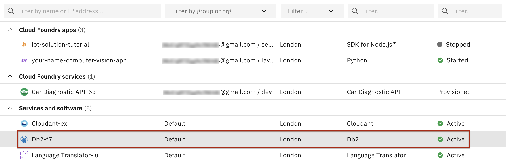
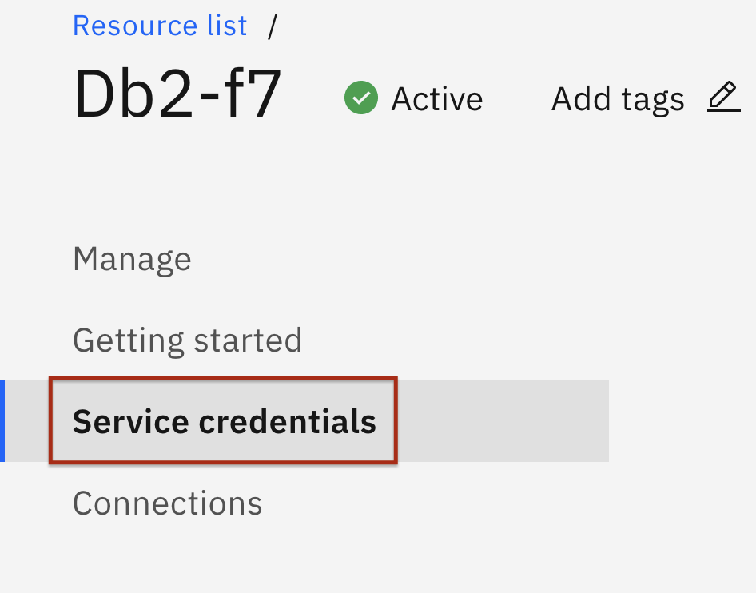
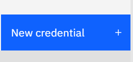
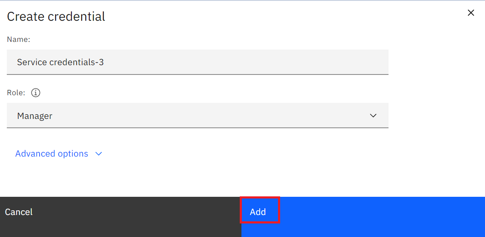
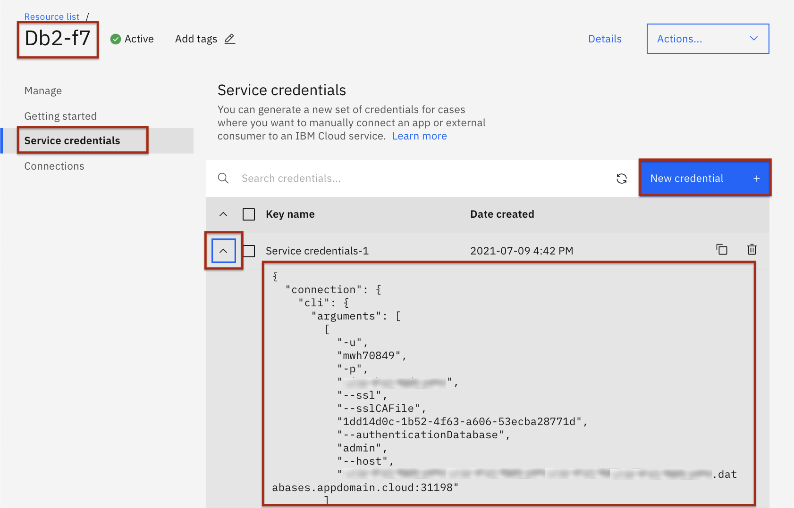
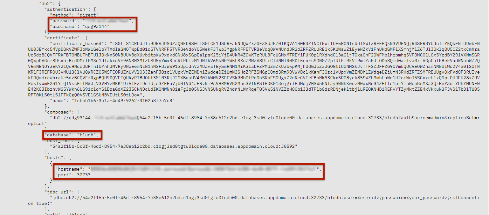

At the end of this lab you will be able to:
Database credentials are required to connect from remote applications like Jupyter notebooks which are used in the labs and assignment in the last two weeks of the course.
https://cloud.ibm.com/resources
Note: you may need to log into IBM Cloud in the process of loading the resources/dashboard.
If your connection is slow it may take over 30 seconds for the dashboard to fully load.
(NOTE: In the example below the service is called “Db2-xx” but your Db2 service may have a different letters/numbers in the suffix e.g. “Db2-f8”, “Db-50”, etc.)



In the prompt that comes up click the “Add” button in the bottom right:


You need to scroll down to get the credentials details.

Simran Garg
| Date | Version | Changed by | Change Description |
|---|---|---|---|
| 2021-07-09 | 2.1 | Malika | Updated screenshots |
| 2020-08-27 | 2.0 | Simran | Migrated lab to course in GitLab |